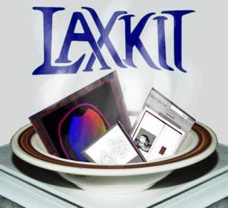

|
News Faq Documentation Download Links Contact |
 The Loose Amalgamated C++ X Wrapper Kit If you are looking for a C++
window toolkit for X that is rough, highly experimental, and whose API is quite unstable,
this is the toolkit for you. It is being made with an eye toward being able to easily
make programs and utilities that are useful to artists. The current main driving force behind
it is the development of the desktop publishing program Laidout.
Latest News 17 February 2014 The eighth release, take it or leave it! This release marks the start of hosting the source code on github, and coincides with the release of Laidout 0.094. There is now a shortcut definition infrastructure, plus a shortcut editing window. Also new is a tree window. The most dramatic new tool interface is for creation of engraving lines. Otherwise, just a lot of debugging and streamlining since the last release two years ago! In the works is a cairo based rendering backend. Old news...
|